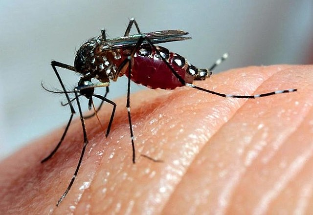
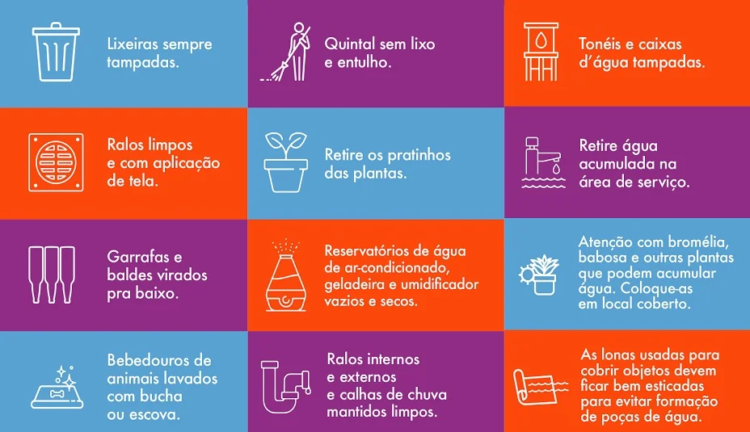
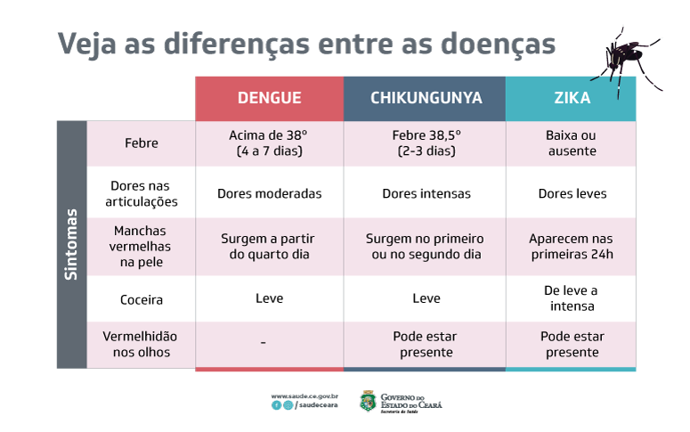

O que são Arboviroses?
Arboviroses são doenças transmitidas por insetos, como os mosquitos, e causadas por vírus. Exemplos conhecidos incluem dengue, zika e chikungunya. Essas doenças representam um grande desafio de saúde pública, especialmente em regiões tropicais.

Como Prevenir?
- Elimine locais que acumulam água parada, como vasos e pneus.
- Use repelente e roupas que cubram braços e pernas em áreas de risco.
- Instale telas em janelas e portas para evitar a entrada de mosquitos.
- Coloque areia nos pratinhos de plantas.
- Participe de campanhas de conscientização e mutirões.

Sintomas de Alerta
Os sintomas variam dependendo da doença, mas podem incluir:
- Dengue: Febre alta, dores musculares e manchas vermelhas na pele.
- Zika: Coceira, erupções cutâneas e conjuntivite.
- Chikungunya: Febre alta e dores intensas nas articulações.
Caso apresente sintomas, procure uma unidade de saúde imediatamente para diagnóstico e tratamento adequados.

Links Úteis
Saiba mais sobre arboviroses nos sites abaixo: